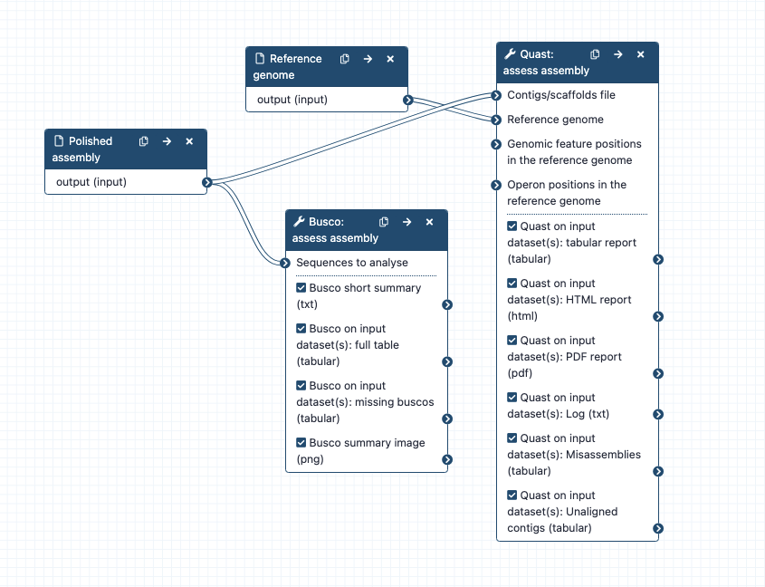

Assess genome quality; can run alone or as part of a combined workflow for large genome assembly. * What it does: Assesses the quality of the genome assembly: generate some statistics and determine if expected genes are present; align contigs to a reference genome. * Inputs: polished assembly; reference_genome.fasta (e.g. of a closely-related species, if available). * Outputs: Busco table of genes found; Quast HTML report, and link to Icarus contigs browser, showing contigs aligned to a reference genome * Tools used: Busco, Quast * Input parameters: None required Workflow steps: Polished assembly => Busco * First: predict genes in the assembly: using Metaeuk * Second: compare the set of predicted genes to the set of expected genes in a particular lineage. Default setting for lineage: Eukaryota Polished assembly and a reference genome => Quast * Contigs/scaffolds file: polished assembly * Type of assembly: Genome * Use a reference genome: Yes * Reference genome: Arabidopsis genome * Is the genome large (> 100Mbp)? Yes. * All other settings as defaults, except second last setting: Distinguish contigs with more than 50% unaligned bases as a separate group of contigs?: change to No Options Gene prediction: * Change tool used by Busco to predict genes in the assembly: instead of Metaeuk, use Augustus. * To do this: select: Use Augustus; Use another predefined species model; then choose from the drop down list. * Select from a database of trained species models. list here: https://github.com/Gaius-Augustus/Augustus/tree/master/config/species * Note: if using Augustus: it may fail if the input assembly is too small (e.g. a test-size data assembly). It can't do the training part properly. Compare genes found to other lineage: * Busco has databases of lineages and their expected genes. Option to change lineage. * Not all lineages are available - there is a mix of broader and narrower lineages. - list of lineages here: https://busco.ezlab.org/list_of_lineages.html. * To see the groups in taxonomic hierarchies: Eukaryotes: https://busco.ezlab.org/frames/euka.htm * For example, if you have a plant species from Fabales, you could set that as the lineage. * The narrower the taxonomic group, the more total genes are expected. Infrastructure_deployment_metadata: Galaxy Australia (Galaxy)
{kind=link}